▲ 강경젓갈축제 밤 무대 풍경(지난 축제 현장, 촬영 연도는 확인하지 못함) 사진=한국관광공사
2026 제30회 강경젓갈축제는 10월 15일(목)부터 18일(일)까지 나흘간, 논산시 강경읍 금강 둔치 일원에서 열린다. 검색하면 '10월 22~25일'로 적힌 글도 보이는데, 이는 지난해(2025년 10월 23~26일) 일정과 섞인 정보로 보인다. 올해 일정은 한국관광공사 TourAPI 등록 정보(시작 20261015, 종료 20261018)와 지역 언론 다수 보도가 같다. 축제 누리집 메인(nonsan.go.kr/ggfestival)에는 10월 2일 확인 시점에 2025년 공지가 떠 있었지만, 같은 논산시 도메인의 문화관광 축제 안내 페이지(gayagok.nonsan.go.kr)에는 2026년 10월 15일(목)~18일(일), 장소 강경읍 금백로 45(강경 금강둔치 일원)로 올라 있어 일정과 도로명 주소는 논산시 자료로 확인됐다. 이 페이지의 문의처는 041-730-2972~3, 2982~3이다. 한국관광공사 등록 번호(041-730-2971·2973)와는 일부 달라, 번호 차이는 아래 표에 정리했다.
1. 일정부터 확정한다 — 10월 15~18일, 22~25일은 지난해 날짜
▲ 밤 무대 앞에 관객이 모인 축제장 풍경. 지난 축제 현장 사진으로 촬영 연도는 확인하지 못했다. 사진=한국관광공사
일정이 엇갈리는 이유를 정리하면 이렇다. 2025 축제는 10월 23~26일(뉴시스 등 보도)에 열렸고, 올해는 한 주 앞당겨 15~18일이다. 목요일 개막이라 평일 낮 방문과 주말 방문을 선택할 수 있다.
| 항목 | 내용 |
|---|---|
| 기간 | 2026년 10월 15일(목)~18일(일), 4일간 |
| 장소 | 논산시 강경읍 금강 둔치 일원. 논산시 누리집·충남관광 표기는 도로명 강경읍 금백로 45, 한국관광공사 행사 정보는 지번 강경읍 황산리 198로 올라 있다. 모두 '강경 금강둔치 일원'을 가리키는 도로명·지번 표기로 보이지만, 두 주소의 대응을 논산시가 직접 밝힌 자료는 찾지 못했다 |
| 운영시간 | 10:00~22:00(TourAPI 등록 정보 기준). 지난해(2025) 행사는 충남관광에 10:00~20:00로 게재돼 있어 올해와 같다고 단정하지 못한다. 프로그램별 시간은 확인하지 못함 |
| 입장료 | 무료(일부 체험·홍보판매·푸드트럭 등은 유료) |
| 주최 | 논산시, (재)논산문화관광재단 |
| 슬로건 | "강경젓갈·상월고구마, 드디어 최고가 되다!" |
| 문의 | 논산시 2026 안내 페이지 041-730-2972~3, 2982~3(우선 기준) / 한국관광공사 등록 041-730-2971, 2973 / 충남관광(2025 행사 정보) 041-730-2983. 모두 논산시 축제 담당 번호대(041-730-29xx)이나 올해 단일 공식 문의처가 어느 번호인지는 확인하지 못했다 |
| 공식 누리집 | nonsan.go.kr/ggfestival(메인은 확인 시점에 2025 공지 상태). 2026 일정·주소는 논산시 문화관광 축제 안내 페이지에 게재 |
| 비고 | 국화전시 병행 보도(아래 info-box 참조) |
ℹ️ 일정 출처별 대조
10월 15~18일: 중도일보·현대경제·충남일보·뉴스티앤티·국제뉴스·논산계룡신문 등 보도와 TourAPI 등록 정보가 일치한다. 10월 22~25일: 올해 일정으로 확인되는 출처를 찾지 못했다(2025년은 23~26일). 논산시 축제 누리집 메인은 확인 시점에 2025년 게시물이었지만, 논산시 문화관광 축제 안내 페이지가 2026년 10월 15~18일로 안내하고 있어 올해 일정의 공식 근거는 확보됐다.
2. 30주년 올해 무엇을 하나 — 강경포구장터와 김장페스타
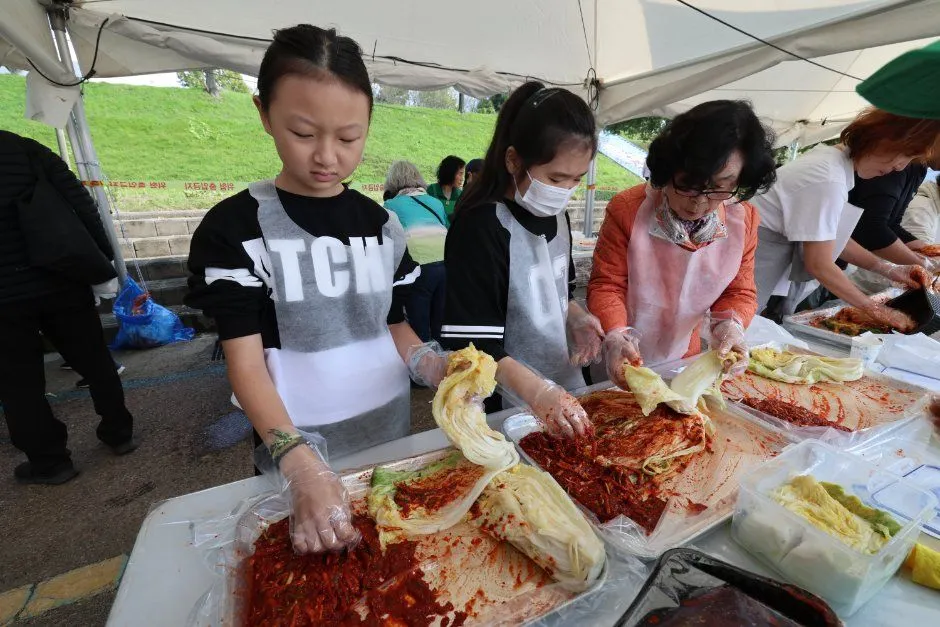
▲ 젓갈 김치 담그기 체험 현장. 올해도 김장 체험·판매가 프로그램에 올라 있다. 사진=한국관광공사
논산시 2026 안내 페이지는 올해 행사를 '젓갈 체험, 공연, 요리 대회, 불꽃놀이 등 다양한 프로그램'으로 소개하고 입장료는 무료라고 적었다. 다만 일자별 시간표나 가수 라인업은 안내돼 있지 않았고, 개막 불꽃쇼 날짜도 확인하지 못했다.
올해 축제는 'K-푸드&컬쳐'를 내세워 조선 3대 시장으로 꼽혔던 강경장을 되살린 '강경포구장터'를 중심에 둔다. TourAPI에 등록된 프로그램 목록에서 자차 방문객이 챙겨 볼 만한 항목을 추렸다.
| 구분 | 프로그램 |
|---|---|
| 김장·젓갈 | 글로벌 강경젓갈 김장페스타 2026(젓갈 김치 담그기 체험, 김장 체험·판매), 젓갈 퓨전 요리체험, 양념젓갈(어리굴) 담그기 체험 |
| 포구장터 | 강경포구장터 한마당(개장식·풍물 길놀이, 장터 체험, 보부상놀이, 줄타기 등) |
| 상월고구마 | 홍보판매장, 바비큐캠프, 비빔밥 체험, 피자 만들기 체험교실 |
| 공연 | 개막식·개막 불꽃쇼, 폐막식, 강변콘서트, 동행콘서트, 강경노을 뮤직 페스티벌, EDM파티, 매직 벌룬쇼 |
| 전시·놀이 | 강경노을 국화전시회, 강경노을 열차·판타지 놀이랜드, 추억의 놀이마당, 강경 금강 뱃길 역사문화 투어 |
| 먹거리·판매 | 논산 5품 디저트 카페, 글로벌 푸드코너, 향토음식코너, 강경노을 마켓, 농특산물 홍보판매장 |
3. 강경 포구와 금강둔치 — 노을 시간대에 맞춘다
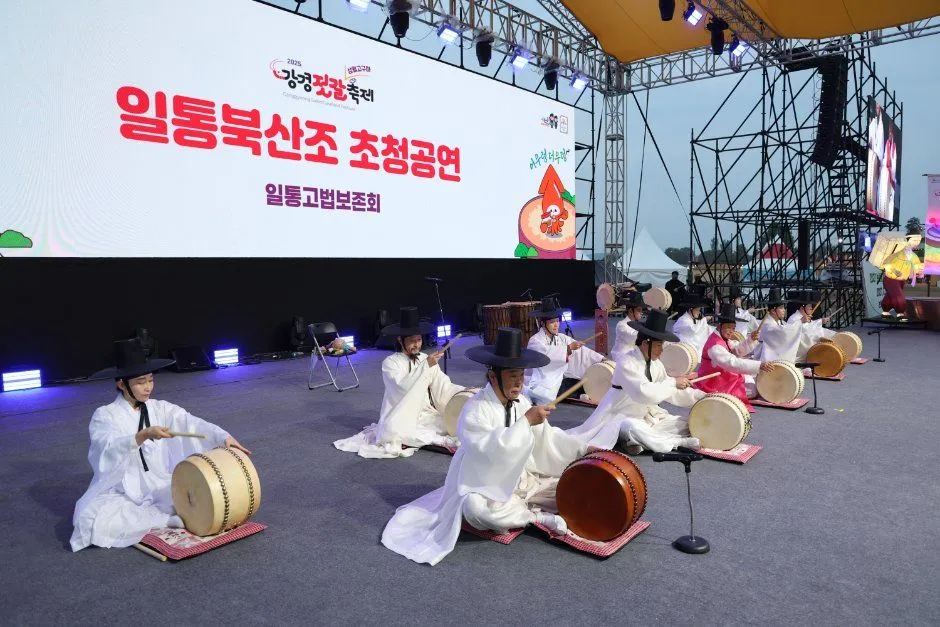
▲ 축제 무대 공연 장면(지난 축제 현장). 사진=한국관광공사
강경은 금강 하구 쪽 내륙 포구로 충청과 전라를 잇던 장터였고, 축제가 열리는 곳이 바로 금강 둔치다. 올해 프로그램명에도 '강경노을'이 여럿 들어간다. 해 질 녘 무대 공연·콘서트가 몰리는 구성으로 보이지만 일자별 시간표는 확인하지 못했다. 낮에는 젓갈 구매와 체험, 저녁에는 노을과 공연으로 나눠 쓰는 일정이 무난하다.
| 시간대 | 추천 용도 | 운전 포인트 |
|---|---|---|
| 10~12시 | 젓갈 시장·판매 부스 구경, 김장 체험 | 주차 여유를 기대할 수 있는 시간대로 추정 |
| 12~15시 | 식사, 포구장터 체험 | 점심 무렵 주차장 진입이 몰릴 가능성 |
| 16~18시 | 노을 감상, 국화전시 | 공연 시작 전후 귀가 차량과 겹칠 수 있음 |
| 18~22시 | 공연·불꽃쇼(개막일 위주) | 귀가 시 출구 정체 대비, 주말 야간은 특히 주의 |
4. 자차 접근·주차·셔틀 — 올해 공지는 확인하지 못했다
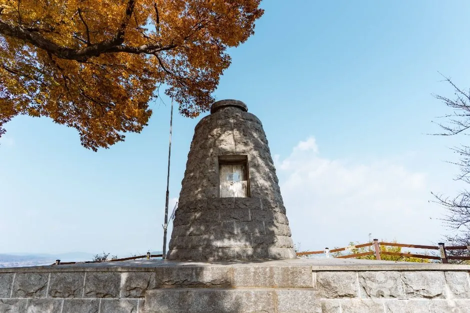
▲ 옥녀봉 정상 석탑. 포구와 금강을 내려다보는 전망 포인트다. 사진=한국관광공사
내비 목적지는 '강경젓갈축제장' 또는 도로명 '충남 논산시 강경읍 금백로 45'로 잡는다(지번 황산리 198로 검색돼도 같은 금강둔치 일원으로 보인다). 10월 2일 기준 논산시·충남관광·한국관광공사 행사 페이지 어디에도 2026년 주차장 위치·수용 대수·셔틀 노선은 실려 있지 않았다. 지난해(2025년) 주차장·셔틀 운영 사례는 이번 확인 과정에서 근거를 다시 찾지 못해 이 글에서는 적지 않는다. 올해 주차·셔틀은 공식 공지가 나오면 그에 따르자.
| 항목 | 내용 | 확인 상태 |
|---|---|---|
| 내비 목적지 | 충남 논산시 강경읍 금백로 45(강경 금강둔치 일원), 지번 황산리 198 | 도로명은 논산시·충남관광, 지번은 한국관광공사 표기 |
| 2026 주차장·셔틀 | 위치·요금·수용 대수·운행 노선 | 확인하지 못함, 출발 전 공지 확인 |
| 지난해 사례 | 확인하지 못한 지난해 주차·셔틀 사례는 싣지 않음 | 올해와 같다는 근거 없음 |
| 혼잡 예상 | 10월 17~18일 주말 낮~저녁 | 추정 |
| 문의 | 논산시 안내 페이지 041-730-2972~3, 2982~3 / 한국관광공사 등록 041-730-2971, 2973 | 출처 간 번호 차이, 논산시 표기를 우선 시도 |
✅ 자차 방문자 체크포인트
· 개막 직후인 15일(목) 낮이 가장 한산할 가능성이 크다(추정)
· 주말에는 오전 일찍 도착해 주차부터 해결하고, 젓갈은 귀가 직전에 산다
· 임시주차장·셔틀이 안내되면 둔치에서 먼 곳은 도보 이동이 필요할 수 있다
· 귀가 차량 정체가 예상되므로 저녁 공연을 다 보고 출발하면 시간을 넉넉히 잡는다
5. 젓갈 사는 요령 — 자차 운반과 아이스박스
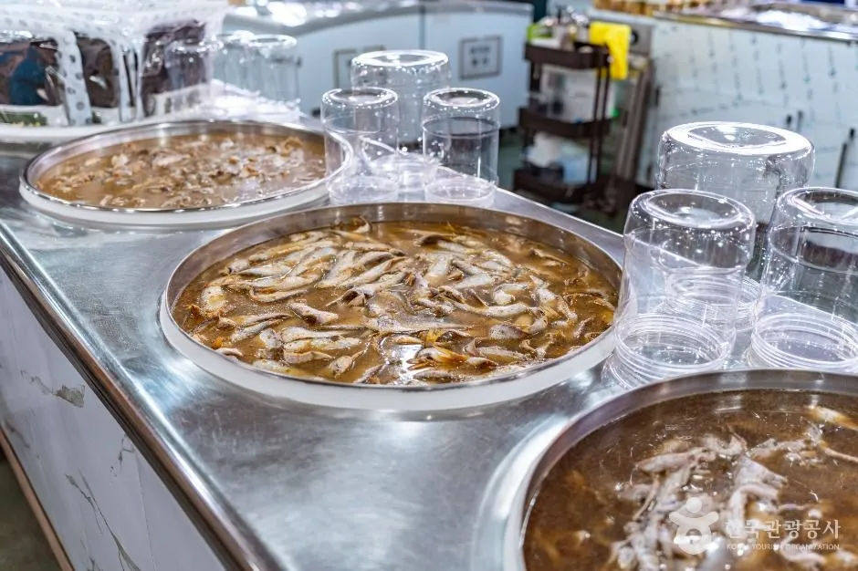
▲ 강경젓갈시장의 젓갈 판매대. 종류별로 맛을 보고 고를 수 있다. 사진=한국관광공사
젓갈은 이 축제의 핵심 구매 품목이다. 올해 판매가는 확인하지 못해 적지 않는다. 대신 자차 방문자라면 아래 원칙을 챙겨 두면 편하다. 표는 일반적인 식품 운반 요령이며 판매처별 포장 방식은 현장에서 확인해야 한다.
| 항목 | 요령 |
|---|---|
| 아이스박스 | 트렁크에 대형 아이스박스와 아이스팩을 미리 싣고 간다. 늦게 사서 바로 귀가하는 편이 안전하다 |
| 차량 내 보관 | 한낮 주차 후 차 안에 두면 온도가 오르기 쉬우므로 쇼핑은 마지막으로 미룬다 |
| 냄새 대비 | 이중 밀봉 용기와 비닐, 바닥 깔개, 신문지를 준비한다 |
| 시식 후 구매 | 한 곳만 사지 말고 여러 매장에서 맛을 비교한 뒤 고른다 |
| 택배 발송 | 양이 많으면 현장 택배 접수 가능 여부를 판매처에 묻는다(올해 운영 여부는 확인하지 못함) |
| 귀가 후 | 가능한 한 빨리 냉장 보관하고 표시된 보관 방법을 따른다 |
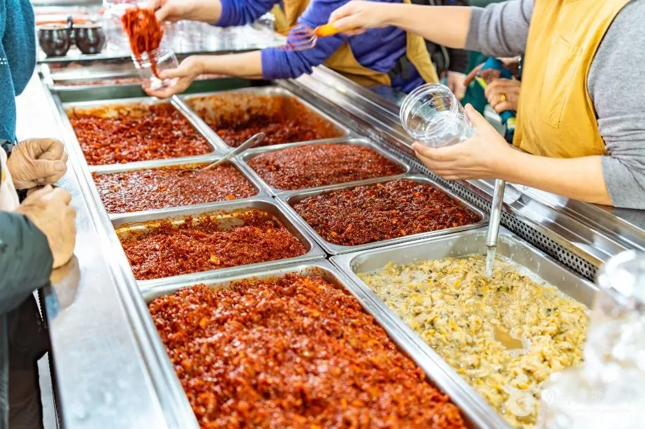
▲ 양념젓갈이 줄지어 놓인 판매대. 사진=한국관광공사
6. 포구 마을 걷기 — 젓갈시장, 근대문화거리, 옥녀봉, 탑정호
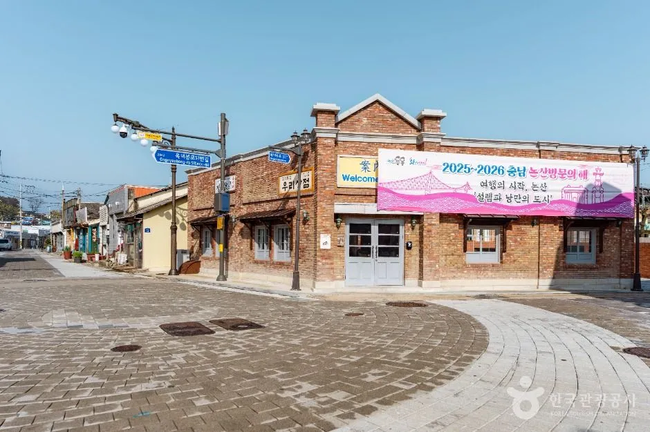
▲ 강경근대거리. 근대 건축물이 남아 있는 골목이다. 사진=한국관광공사
축제장만 보고 가기엔 아쉬우니 읍내 코스를 붙일 만하다. 강경젓갈시장은 옥녀봉로27번길 30-3에, 강경근대거리는 옥녀봉로 30-5에 있다(TourAPI 주소). 논산시 강경 관광안내에는 옥녀봉(약 44m, 금강과 읍내 전망), 1920년대 건재약방 등 근대 건축물, 도보 코스가 소개돼 있다.
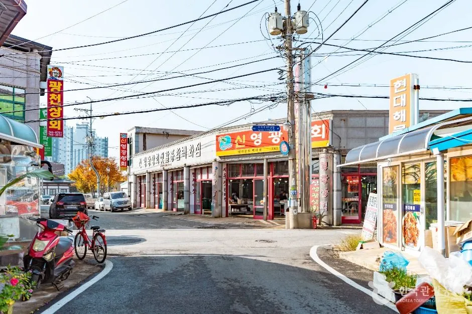
▲ 가을 햇살 아래 강경젓갈시장 골목. 사진=한국관광공사
| 장소 | 특징 | 메모 |
|---|---|---|
| 강경젓갈시장 | 젓갈 상설 판매 골목 | 축제가 붐비면 상설 시장에서 사는 방법도 있음(영업시간 확인하지 못함) |
| 강경근대거리 | 근대 건축물 골목 | 주차 후 도보 이동 |
| 옥녀봉 | 약 44m 전망 언덕, 금강 조망 | 노을 시간대 방문 후보(운영 규정 확인하지 못함) |
| 논산 탑정호출렁다리 | 600m 호수 위 다리, 입장료·주차 무료, 9~10월 09:00~18:00 | 강경에서의 정확한 소요 거리는 확인하지 못함. 낮 일정으로 따로 잡는 편이 안전 |
| 서해안 가을 수산물 축제 일정 | 전어·대하 등 시기별 축제 비교 | 서해안 축제 일정과 비교해 계획할 때 참고 |
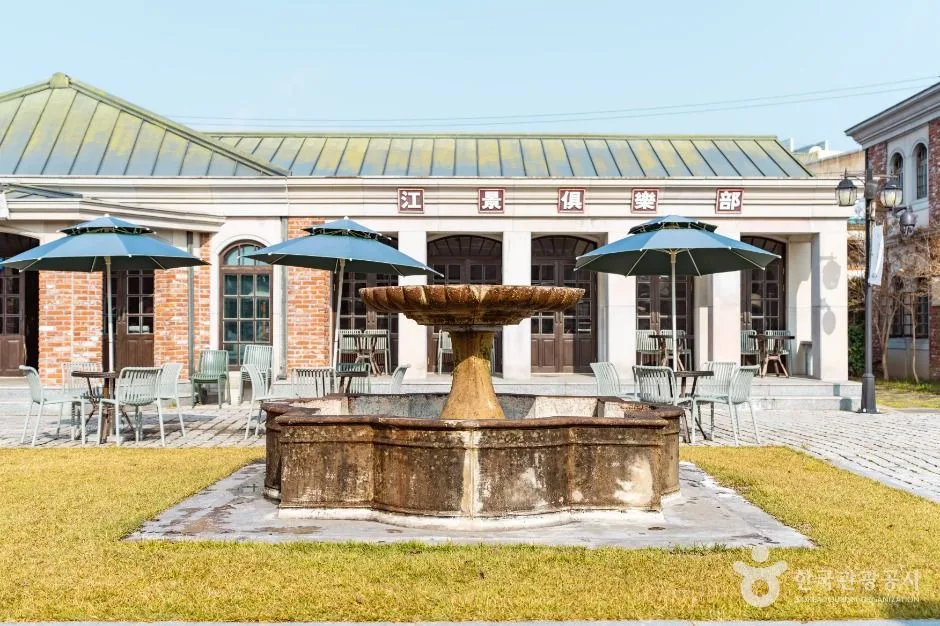
▲ 강경구락부 중앙광장 일대. 촬영 시기는 확인하지 못했다. 사진=한국관광공사
| 장소 | 확인된 사실 | 이용 정보 |
|---|---|---|
| 강경구락부 | 강경근대역사문화거리의 복합공간. 붉은 벽돌의 구 한일은행 건물, 재현한 강경호텔과 카페가 중앙광장을 둘러싼다. 호텔·카페는 실제 운영 중 | 계백로167번길 46-11. 카페(커피인터뷰 강경) 09:00~18:00로 등록. 입장·주차 정보는 확인하지 못함 |
| 구 강경성결교회 예배당 | 한옥 형태가 남은 초기 교회 건축. 2002년 국가등록문화유산 지정, 강경성결교회가 관리 | 계백로219번길 40-1. 연중무휴 등록이나 이용 시간은 전화 문의(041-745-3164). 주차 '가능'으로 등록 |
| 강경미내다리 | 1731년(영조 7년) 강경촌 송만운이 주도해 만든 3칸 무지개 돌다리. 길이 30m·너비 2.8m·높이 4.5m, 조선시대 충청·전라를 잇는 삼남에서 가장 큰 다리로 소개 | 채운면 삼거리. 상시 개방·연중무휴·주차 '가능', 문의 논산문화관광안내소 041-746-5945. 축제장에서의 거리는 확인하지 못함 |
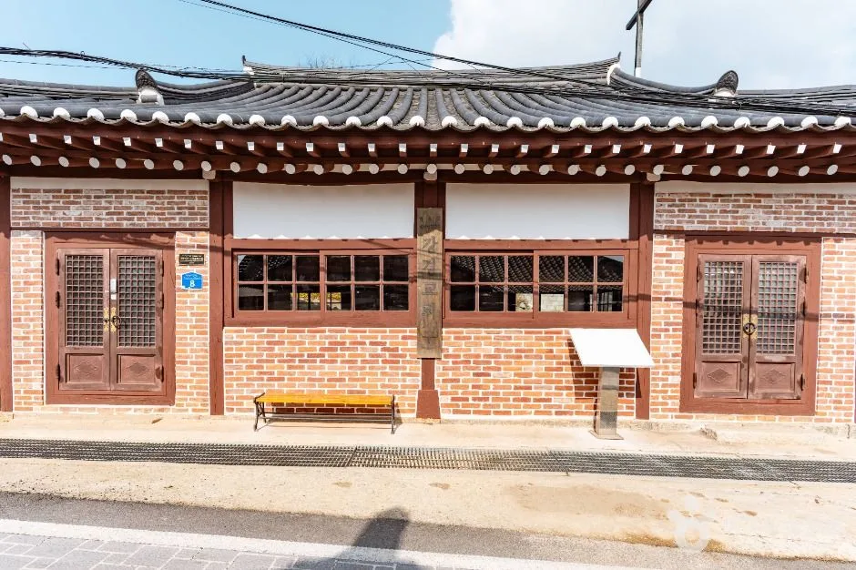
▲ 한옥 지붕에 벽돌 벽을 올린 구 강경성결교회 예배당 정면. 사진=한국관광공사
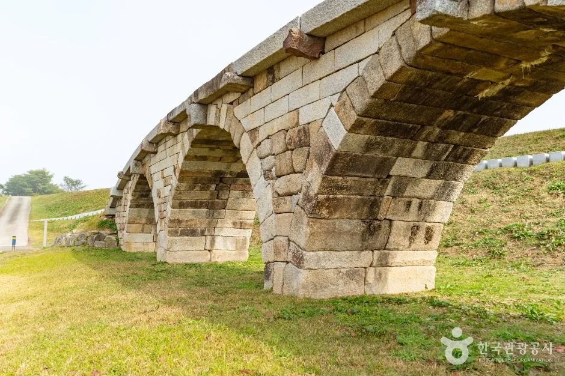
▲ 돌을 쌓아 무지개 모양 아치를 만든 강경미내다리. 사진=한국관광공사
ℹ️ 강경 국가유산야행은 이미 끝났다
한국관광공사에는 '강경 국가유산야행'이 2026년 8월 28일~9월 5일, 18:00~21:30, 강경근대역사문화거리에서 열린 행사로 등록돼 있다(주최 논산시, 문의 041-730-2971·3). 근대 국가유산 야간 개방, 경관조명, 공연, 도슨트 투어 등 8개 테마 30개 프로그램을 내세웠으나 이미 종료돼 이번 축제 방문과는 겹치지 않는다. 내년 이후 같은 시기에 열릴지는 확인하지 못했다.
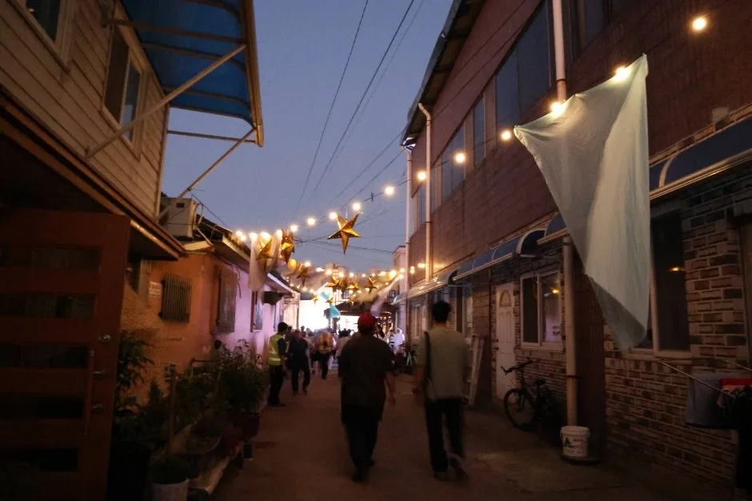
▲ 강경 국가유산야행 당시 근대거리 골목의 야간 풍경(올해 젓갈축제 현장 아님). 사진=한국관광공사
ℹ️ 국화전시 일정은 둘로 보도됐다
웹이코노미 보도는 축제장 전시(10월 15~18일)와 시민가족공원 전시(10월 21일~11월 4일)를 구분했다. 다른 보도는 '10월 15일~11월 4일'로 묶어 적었다. 시민가족공원 전시는 축제 이후 별도로 가볼 수 있지만 정확한 기간은 공식 공지로 확인하자.
7. 코스별 소요시간과 날씨 대비 — 추정치로 짜는 하루 일정
아래 시간은 공식 자료가 아니라 이 글이 일반적인 관람 속도를 가정해 잡은 추정치다. 실제 체류는 대기 줄과 주차 사정에 따라 달라진다. 근교 코스로는 대둔산 케이블카·금강구름다리, 공주 공산성·무령왕릉, 부여 궁남지 기사를 함께 보면 하루를 길게 쓸 때 고르기 좋다. 이 근교 코스와 강경 사이의 정확한 주행 시간은 확인하지 못했다.
| 코스 | 구성 | 예상 소요(추정) |
|---|---|---|
| 축제장 위주 | 둔치 부스 구경, 체험 1~2개, 젓갈 쇼핑 | 2~3시간 |
| 축제 + 읍내 도보 | 축제장, 젓갈시장, 근대거리, 강경구락부 | 4~5시간 |
| 축제 + 노을 + 공연 | 낮 쇼핑 후 옥녀봉 전망, 저녁 무대 | 6시간 안팎, 귀가 정체 포함 시 더 길어질 수 있음 |
✅ 날씨·귀가 체크포인트
· 10월 중순 저녁 강변은 기온이 떨어질 수 있으니 겉옷을 차에 싣는다(일반 상식, 올해 예보는 확인하지 못함)
· 비가 오면 둔치 바닥이 질 수 있어 방수 신발이 편하다. 우천 시 프로그램 변경은 공지로 확인한다
· 젓갈은 마지막에 사서 바로 귀가한다. 비 오는 날도 차 안 보관 시간은 짧게 잡는다
8. 요약
2026 제30회 강경젓갈축제는 10월 15일(목)~18일(일), 논산시 강경읍 금강 둔치 일원이며 입장료는 무료(일부 체험·판매 유료)다. 10월 22~25일로 적힌 글은 지난해(10월 23~26일) 일정과 섞인 것으로 보이며, 올해 일정을 확인해 주는 출처는 찾지 못했다.
자차 방문자는 내비를 '강경젓갈축제장'으로 맞추고, 주말에는 오전 일찍 주차부터 해결한 뒤 젓갈은 귀가 직전에 아이스박스에 담자. 다만 올해 주차장·셔틀 공지, 일자별 시간표, 젓갈 판매가는 확인하지 못했으니 출발 전 논산시 공식 누리집이나 문의처(논산시 안내 041-730-2972~3·2982~3, 한국관광공사 등록 041-730-2971·2973)로 확인하길 권한다.